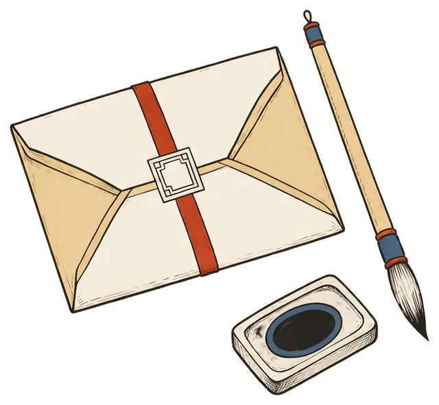
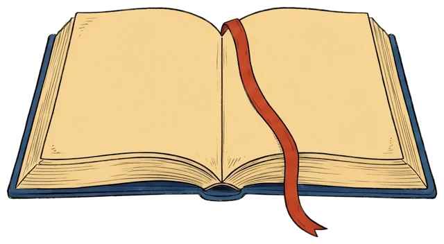
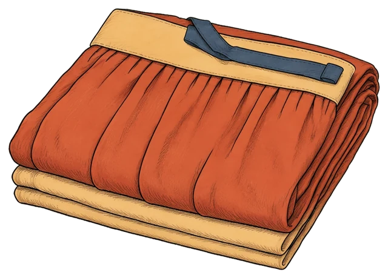
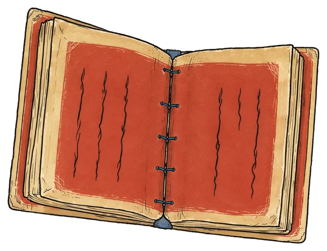
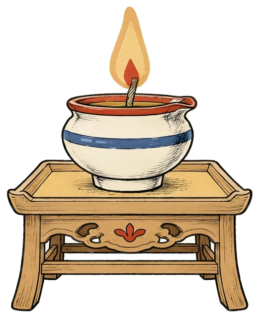
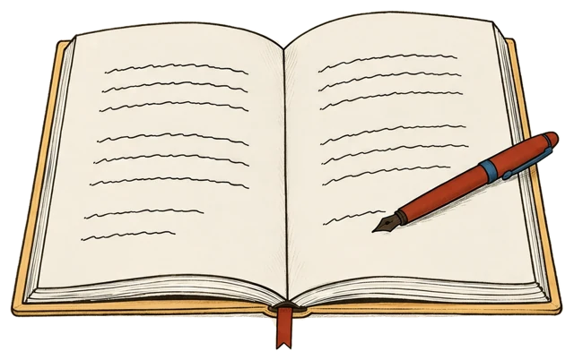
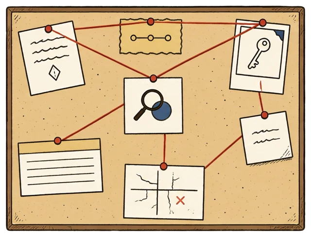
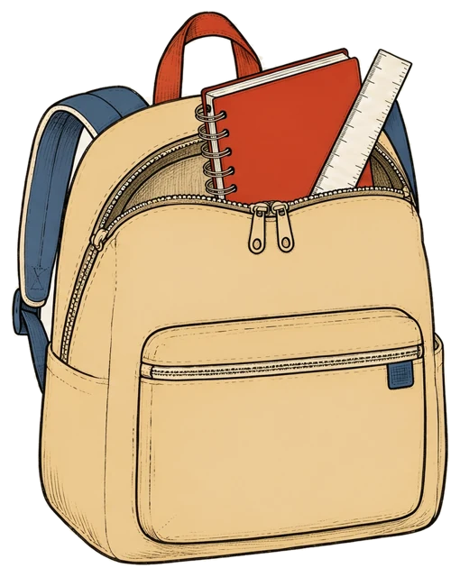
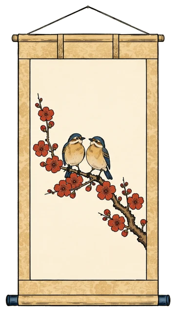
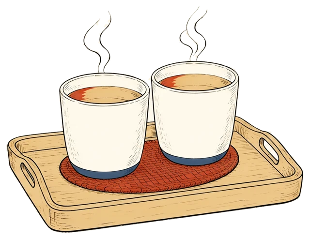

아이에게 주려던 편지를, 부모가 먼저 읽어 보기

!부모가 읽으면 먼저 드는 생각

고전아이를 설득할 증거 자료 부모가 먼저 읽기 공부하라는 말 뒤의 걱정부터
1유배지에 도착한 치마 한 벌


노을빛(霞) 치마(帔)로 만든 서첩
두 아들에게 남긴 당부
?곁에서 볼 수 없는 아버지

1첫째 · 읽었는지보다 무슨 생각을 했는지
✕다 옮겨 적기

○골라 적기
고르려면, 먼저 생각을 해야 합니다
1우리 집 저녁, 책을 덮은 아이

부모 마음속 작은 수사본부2둘째 · 하피첩에 남은 당부
시험지를 받은 아이에게, “왜 이것도 틀렸어?” 대신 뭐라고 물을까요?
2몸가짐의 기준을 부모에게도
아이의 잘못은 따로 이야기하기 · 사과한다고 약속과 규칙이 사라지지는 않아요
3셋째 · 혼자 다 하는 아이가 아니라2

준비물 목록 확인
파는 곳 찾기
늦은 밤 문구점까지 태워 주기
자립 = 도움을 끊는 일이 아니라, 내 몫과 필요한 도움을 알아 가는 일
돕는 마음도 같아요. 다만 불편한 부탁까지 다 들어주라고 하지는 않기 — 거절할 줄 아는 마음과 배려하는 마음은 같이 자랍니다.
!미뤄 둔 치마 이야기
하피첩 · 1810년
매조도 · 1813년, 유배 13년째
고려대학교박물관 소장

곁에 없는 아버지의 도움은, 멀리서도 남는 것
✓옛 편지를 골라 읽기
편지에는 부모의 뜻을 받들라는 글도 있어요2 · 아이는 다른 생각을 가질 수 있고, 부모의 바람이 늘 맞는 것도 아니니까요
✉정약용은 치마 위에, 우리는 오늘 한 장에
네 이야기를 다 듣기 전에 답하지 않고, 네 생각을 먼저 물어볼게.
잘못한 일은 너를 나쁜 사람으로 정하지 않고, 같이 바로잡을게.
할 수 있는 일은 기다려 줄게. 어려운 일은 도와 달라고 말해 줘.
내 생각과 다른 이야기도 해 줘. 네 마음을 다 아는 건 아니니까.
이 강의를 위해 새로 쓴 편지입니다(정약용의 편지 번역이 아님)
⇄오늘 바꿔 본 말, 한 장에
?오늘 저녁, 질문 하나만
“할 일은 다 했어?”
“오늘은 무슨 생각을 했어?”
그리고 대답이 시작되면,
이번에는 끝까지 들어 보기

가족 대화와 생활 장면은 설명을 위한 가상 예시입니다. 질문 바꾸기·사과·자립에 관한 제안은 이 강의의 해석이며, 정약용의 주장이나 효과가 검증된 처방이 아닙니다. 3첩 원문의 우리말은 박물관 풀이에 기대어 쉽게 옮긴 것입니다.